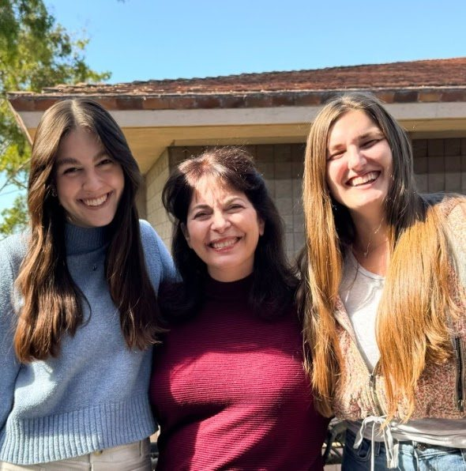
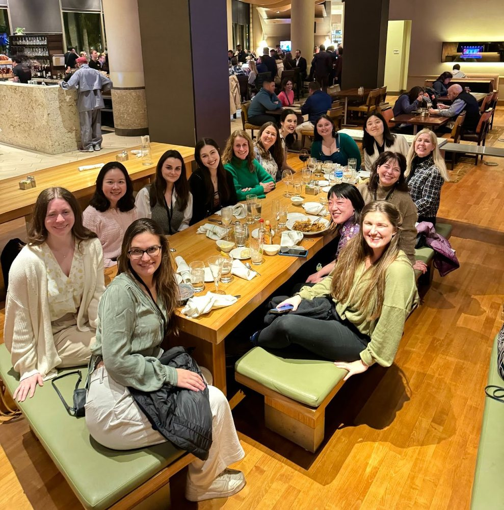
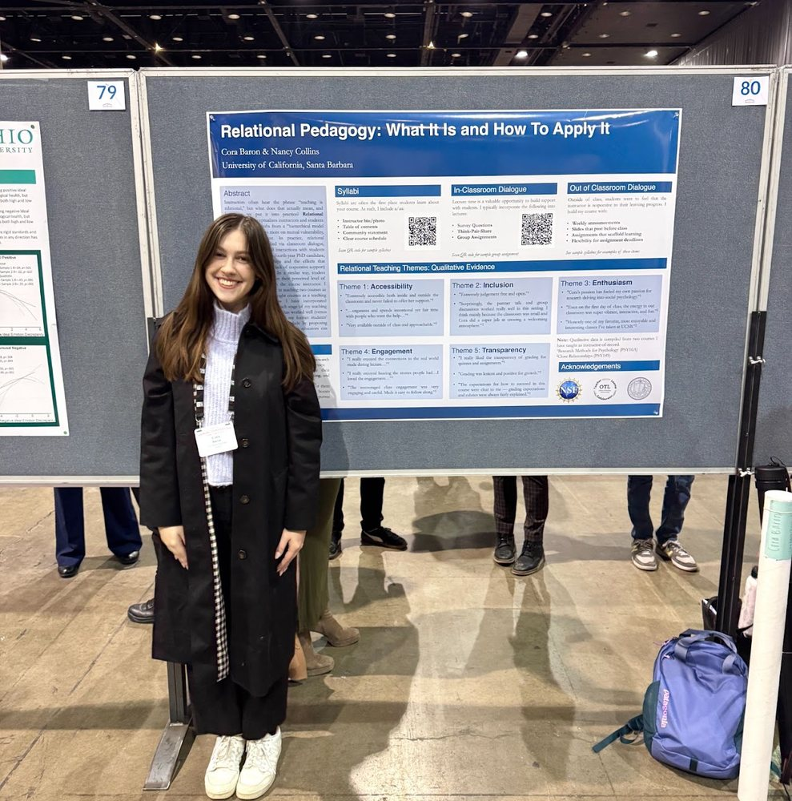

Social Psychology · UC Santa Barbara
Hi, I’m Cora Baron.
I study how our closest relationships shape who we are and how we thrive.
I’m an NSF Graduate Research Fellow and Ph.D. candidate in the Social Psychology program at the University of California, Santa Barbara. Before UCSB, I earned my B.S. in Psychological Science from Arizona State University and worked as a visiting scholar at the University of Chicago, Booth School of Business.
My research sits at the intersection of close relationships, social identity, and health psychology. I study how our closest relationships help us develop a sense of who we are, build resilience through stress and adversity, and pursue meaningful growth and self-exploration. Across my studies, I work to show how relational processes, such as social support, shape the outcomes that define thriving: self-acceptance, personal growth, and physical health.
In my teaching, I draw on the same principles that guide my research: that supportive, inclusive relationships give people the security to take risks, explore, and grow. I work to build a classroom that functions as a secure base: an environment where students feel safe enough to share ideas, ask questions, and engage with one another, and where that sense of safety empowers them to develop critical thinking and writing skills.
In my free time, you’ll find me sharpening my photography skills, walking my dog (Suki), traveling, reading, or constructing the perfect beach sandwich.
My CV (last updated 11/2/26) is available here.


